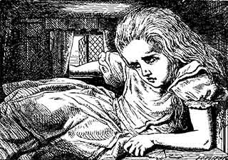

Alice in Wonderland Syndrome (AIWS or AWS) describes a set of symptoms, the most famous of which are:
Most reports are about children experiencing AIWS symptoms, though many people experience it in later life. Many people say they had AIWS symptoms as a child, but 'grew out' of them around their teens.
The most common time to experience AIWS symptoms is at night.
The most prominent and often most disturbing symptom is that of altered body image: the sufferer will find that they are confused as to the size and shape of parts of (or all of) their body. The parts usually mentioned are the head and hands; growth seems more usual than shrinkage. This phenomenon seems to have the medical term 'metamorphosis'.
The second major symptom is the distortion of visual perception. The eyes themselves are normal, but the sufferer 'sees' objects with the wrong size or shape and/or finds that perspective is incorrect. This can mean that people, cars, buildings, etc. look smaller or larger than they should be, or that distances look incorrect; for example a corridor may appear to be very long, or the ground may appear too close.
Other symptoms which have been referred to as part of AIWS include:
When this site was first created, there were about four other sites on the Web that mentioned AIWS. Now there are over one thousand and the number appears to be growing steadily.
It appears that still only a minority of medical professionals have heard of the syndrome. If it is possible to have AIWS symptoms with no underlying cause, then perhaps more people would be diagnosed with AIWS itself, but it seems likely that there is (almost) always an identifiable cause, so AIWS is probably seen as an interesting side-effect.
There is, as yet, no proven effective treatment for AIWS, but there are treatments for the possible causes listed. AIWS symptoms caused by migraines seem to lessen somewhat with the standard to changes to diet and lifestyle required to (help) prevent migraines, such as avoiding dark chocolate, red wine and strong cheese, keeping to a regular sleep pattern and avoiding hangovers and excess tiredness.
AIWS is sometimes a frightening condition for the sufferer. If you suffer from AIWS, please be assured that the symptoms themselves do not indicate that you are 'going mad' or have anything serious wrong with you. If you have more information about this condition, please do not hesitate to join the support/discussion group.
I deleted the link to stuff about 'subsyndromal' epilepsy as the page has been removed for some reason. The page suggested a link between AIWS symptoms and Temporal Lobe Epilepsy. The symptoms are similar. I've recently been tested for epilepsy and told I don't have it, though I have heard from one person who has AIWS and TLE.
Since setting up this site, I've had quite a few messages from people with symptoms the same or similar to those I have experienced. I have included a selection of quotes here, with permission from the authors.
... when I've been lying in bed, generally when the room is darker but still visible. I feel the distortion of body image (not visual but how my hands & limbs feel), touch, & vision perception.
My notes: Quite often, especially if I have been asleep for a long time (12h+) I wake up feeling paralysed and my hands look and feel very strange, with my fingers appearing very long and skinny.
... in its [Temporal Lobe Epilepsy] milder forms, the seizures are profoundly subjective, profoundly difficult to put into words. Deja vu, that's easy to communicate, but other TL seizures border on religious experience - or can be as ordinary as a migraine.
My notes: I included the Temporal Lobe Epilepsy link, because it seemed to suggest that AIWS may be related in some way. I was sent a link to an interesting quiz, which refers to a different (?) type of epilepsy. It's interesting to me as I recognise nearly all of the described symptoms. I have had tests for epilepsy: the results were negative.
In my case it used to happen in the evenings when I was concentrating on a book or on a monitor.
After trying numerous drugs, enduring several hospitalizations and a number of doctors (one tried to tell me my son must be mentally ill) we finally found a drug that worked. Neurology at the [clinic] suggested Periactin - an old antihistamine. After one pill my son's vision was normal up to about 7 feet. After two pills he was completely normal. He has been symptom free for several weeks now.
My notes: I hesitate to suggest remedies here, especially drugs, so please, don't take the above quote as advice. I'm not qualified as a medic in any sense, I'm just collecting information here.
When I was young, around 5 to 10 years old, I would have these "episodes" when the world around me would instantly become a mirror image of what I was used to. It happened once when we were returning home and we were riding down the one-way street we lived on. All of a sudden, it felt as if we were now going east instead of west, all of the traffic was going in the wrong direction, and our house was now on the opposite side of the street, and at the other end of the block. Once in the house it was difficult to find my way around. Then all of a sudden things were back to normal.
My notes: these symptoms are different from those I have experienced and previously heard about, yet appear (to me at least) to be a variation on the theme. I included the quote as I found it very interesting.
The information on this site is mostly written by me, Rik Hemsley. I am not a medical professional. I began experiencing the symptoms described here in 1997 and at the time could find no information on the subject. This site exists to help those in similar circumstances.
rik@hemsley.cc